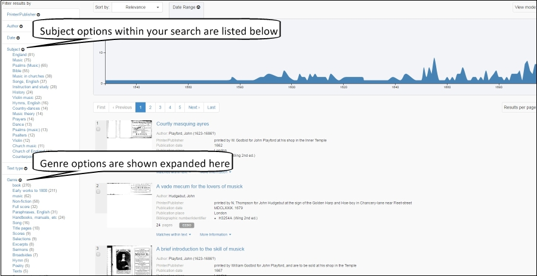

<div class="row">
    <div class="col-xs-12 topSpace">
        <div class="sideMenu">
            <div class="title">Support</div>
            <ul>
                <li><a href="">Support Home</a></li>
                <li><a href="/help/">Help File</a></li>
                <li><a href="/librarians/">Librarians</a></li>
                <li><a href="/faq/">FAQ</a></li>
				<li><a href="/quickref/">Quick Reference Guide</a></li>
				<li><a href="/features/">Features</a>
													 <ul>
            <li><a href="/astronomy">Astronomy</a></li>
            <li><a href="/blcovers">British Library Covers</a></li>
            <li><a href="/christmas">Christmas</a></li>
      <!--  <li><a href="/comedy">Comedy, Laughter and Humour</a></li> -->                                                         
			<li><a href="/cookery">Cookery</a></li>
      <!--  <li><a href="/opencookery">Cookery &#45; the UK Medical Heritage Library Collection</a></li> -->                                                        
	     	<li><a href="/locallondon">Local History&#58; London</a></li>
			<li><a href="/maps">Maps</a></li>
			<li class="selected"><a href="/music">Music</a></li>
      <!--  <li><a href="/stem">Science, Technology and Engineering</a></li> -->                                                        
            <li><a href="/shakespeare">Shakespeare</a></li>
      <!--  <li><a href="/openfitness">Sport and Fitness &#45; the UK Medical Heritage Library Collection</a></li> -->                                                         
            <li><a href="/travel">Travel and Explorers</a></li>
      <!--  <li><a href="/opentravel">Travel and Exploration &#45; the UK Medical Heritage Library Collection</a></li> -->                                                         
            <li><a href="/witchcraft">Witchcraft</a></li>
            </ul>
			</li>
			
            </ul>
        </div>

        <div class="support">

            <ol class="breadcrumb">

				    <li><a href="/features/">Features</a></li>
                    <li class="active">Music</li>

            </ol>


           <h1>Music</h1>
           
           
           <p class="lead">It may surprise some users to hear that Historical Texts includes a lot of material on music, including discourses and treatises on music, historical accounts, correspondence, scores and sheet music. We've searched the archives to find some interesting and unusual texts, and offer some suggestions on how best to search for this kind of material.</p>
		
		<br />
		

<h2>Famous Composers</h2>
<p>There is a good deal of material in Historical Texts relating to famous composers. Here we have a poem composed in tribute after the death of Henry Purcell, Anecdotes of Handel, and the Music of the Poets &#45; A Musician&#39;s Birthday Book.</p>
       
<div class=row> <div class="col-sm-6 col-md-3"> <div class=thumbnail>  <div class=caption> <h3>A poem occasioned on the death of Mr. Henry Purcell, late musician in ordinary to His Majesty</h3>
<p>Published&#58; 1696</p> <p><span class="badge">EEBO</span></p><p><a href=https://historicaltexts.jisc.ac.uk/eebo-ocm07944551e class="btn btn-primary" role=button>View text</a> </p> </div> </div> </div> 

<div class=row> <div class="col-sm-6 col-md-3"> <div class=thumbnail>  <div class=caption> <h3>Anecdotes of George Frederick Handel, and John Christopher Smith.</h3>
<p>Published&#58; 1799</p> <p><span class="badge">ECCO</span></p><p><a href=https://historicaltexts.jisc.ac.uk/ecco-0671500600 class="btn btn-primary" role=button>View text</a> </p> </div> </div> </div> 

<div class=row> <div class="col-sm-6 col-md-3"> <div class=thumbnail>  <div class=caption> <h3>The Music of the Poets ... Second edition, completely revised.</h3> <p>Published&#58; 1898</p> <p><span class="badge">BL</span></p><p><a href=https://historicaltexts.jisc.ac.uk/bl-001939512 class="btn btn-primary" role=button>View text</a> </p> </div> </div> </div>
  

</div></div></div>


<h2>Musical Discourse</h2>
<p>Here we have music and religion colliding in &ldquo;A musick&#45;lector, or, The art of musick &#40;that is so much vindicated in Christendome &#40;discoursed of by way of dialogue between three men of several judgments&rdquo;, an &ldquo;Account of an infant musician Read at the Royal Society&rdquo; by renowned scholar Charles Burney, and &ldquo;Music and Manners in France and Germany&#58; a series of travelling sketches of art and society&rdquo;</p>

 <div class=row> <div class="col-sm-6 col-md-3"> <div class=thumbnail>  <div class=caption> <h3>A musick&#45;lector, or, The art of musick &#40;that is so much vindicated in Christendome&#41;....</h3> <p>Author&#58; Solomon Eccles</p> <p>Published&#58; 1667</p> <p><span class="badge">EEBO</span></p><p><a href=https://historicaltexts.jisc.ac.uk/eebo-ocm11209887e class="btn btn-primary" role=button>View text</a></p> </div> </div> </div> 
 
 <div class=row> <div class="col-sm-6 col-md-3"> <div class=thumbnail>  <div class=caption> <h3>Account of an infant musician. Read at the Royal Society, Feb. 18, 1779. By Charles Burney....</h3> <p>Author&#58; Charles Burney</p><p>Published&#58; 1779&#45;80</p> <p><span class="badge">ECCO</span></p><p><a href=https://historicaltexts.jisc.ac.uk/eccoii-1393401000 class="btn btn-primary" role=button>View text</a> </p> </div> </div> </div>
  
 <div class=row> <div class="col-sm-6 col-md-3"> <div class=thumbnail>  <div class=caption> <h3>Music and Manners in France and Germany: a series of travelling sketches of art and society.</h3> <p>Published&#58; 1774</p> <p><span class="badge">BL</span></p><p><a href=https://data.historicaltexts.jisc.ac.uk/view?pubId=bl-000691466&index=bl&pageId=bl-000691466-600298-75 class="btn btn-primary" role=button>View text</a> </p> </div> </div> </div> 
 </div></div></div>

         
<h2>Musical Instruction</h2>
<p>We hold a lot of content related to musical instruction, study and education. Here we have &ldquo;Malcolm's Treatise of music&rdquo;, &ldquo;Abstract of the talents and knowledge of a musician, with a new method which may enlighten the amateurs in their musical studies.&rdquo; and &ldquo;The modern musick-master or, the universal musician&rdquo;</p>
 
 <div class=row> <div class="col-sm-6 col-md-3"> <div class=thumbnail>  <div class=caption> <h3>Malcolm's Treatise of music, speculative, practical, and historical. Corrected and abridged, by an eminent musician.</h3> <p>Published&#58; 1776</p><p><span class="badge">ECCO</span></p><p><a href=https://data.historicaltexts.jisc.ac.uk/view?pubId=ecco-0013905400&index=ecco&pageId=ecco-0013905400-30 class="btn btn-primary" role=button>View text</a> </p> </div> </div> </div> 
 
 <div class=row> <div class="col-sm-6 col-md-3"> <div class=thumbnail>  <div class=caption> <h3>Abstract of the talents and knowledge of a musician, with a new method which may enlighten the amateurs in their musical studies.</h3><p>Published&#58; 1783</p> <p><span class="badge">ECCO</span></p><p><a href=https://historicaltexts.jisc.ac.uk/eccoii-1396000400 class="btn btn-primary" role=button>View text</a> </p> </div> </div> </div>  
 
  <div class=row> <div class="col-sm-6 col-md-3"> <div class=thumbnail>  <div class=caption> <h3>The modern musick-master or, the universal musician, containing, I. An introduction to singing, ... VI. The harpsichord illustrated &#38; improv'd...</h3><p>Published&#58; 1731</p> <p><span class="badge">ECCO</span></p><p><a href=https://data.historicaltexts.jisc.ac.uk/view?pubId=ecco-1147300601&index=ecco&pageId=ecco-1147300601-570 class="btn btn-primary" role=button>View text</a> </p> </div> </div> </div> 
  
   </div></div></div>   

<h2>Sheet Music and Scores</h2>
<p>Here we've collected a variety of score and manuscript material that you might not expect to find in Historical Texts. Here we have &ldquo;The Beauties of Domenico Scarlatii&rdquo;, Purcell&#39;s amazing &ldquo;Orpheus Brittannicus&rdquo;, a translated collection of German ballads, &ldquo;Seven songs for harpsichord&rdquo; dedicated to George Washington, &ldquo;Flowers of Paradise&rdquo;, and a single page of score where even the cataloguers were unsure of its origin&#33;</p>
 
 <div class=row> <div class="col-sm-6 col-md-3"> <div class=thumbnail>  <div class=caption> <h3>The beauties of Dominico Scarlatti. Selected from his suites de lecons, for the harpsichord or piano forte</h3> <p>Published&#58; 1785</p><p><span class="badge">ECCO</span></p><p><a href=https://data.historicaltexts.jisc.ac.uk/view?pubId=ecco-1137302501&index=ecco&pageId=ecco-1137302501-190 class="btn btn-primary" role=button>View text</a> </p> </div> </div> </div> 
 
 <div class=row> <div class="col-sm-6 col-md-3"> <div class=thumbnail>  <div class=caption> <h3>Orpheus Britannicus, A collection of all the choicest songs for one, two, and three voices</h3><p>Published&#58; 1698</p> <p><span class="badge">EEBO</span></p><p><a href=https://historicaltexts.jisc.ac.uk/eebo-ocm12825723e class="btn btn-primary" role=button>View text</a> </p> </div> </div> </div>  
 
  <div class=row> <div class="col-sm-6 col-md-3"> <div class=thumbnail>  <div class=caption> <h3>A collection of German ballads and songs with their original music, done into English by the translator of The German Erato</h3><p>Published&#58; 1731</p> <p><span class="badge">ECCO</span></p><p><a href=https://data.historicaltexts.jisc.ac.uk/view?pubId=ecco-1137301000&index=ecco&pageId=ecco-1137301000-220 class="btn btn-primary" role=button>View text</a> </p> </div> </div> </div> 
  
   </div></div></div>    
   
    <div class=row> <div class="col-sm-6 col-md-3"> <div class=thumbnail>  <div class=caption> <h3>Seven songs for the harpsichord or forte piano. The words and music composed by Francis Hopkinson.</h3> <p>Published&#58; 1788</p><p><span class="badge">ECCO</span></p><p><a href=https://data.historicaltexts.jisc.ac.uk/view?pubId=eccoii-1484000800&index=eccoii&pageId=eccoii-1484000800-30 class="btn btn-primary" role=button>View text</a> </p> </div> </div> </div> 
 
 <div class=row> <div class="col-sm-6 col-md-3"> <div class=thumbnail>  <div class=caption> <h3>Flowers of Paradise. Music, verse, design &#38; illustration by R. F. Hallward.</h3><p>Published&#58; 1889</p> <p><span class="badge">BL</span></p><p><a href=https://data.historicaltexts.jisc.ac.uk/view?pubId=bl-001574815&index=bl&pageId=bl-001574815-626917-30 class="btn btn-primary" role=button>View text</a> </p> </div> </div> </div>  
 
  <div class=row> <div class="col-sm-6 col-md-3"> <div class=thumbnail>  <div class=caption> <h3>Music from unidentifed source</h3><p>Published&#58; 15&#45;&#45;&#63;</p> <p><span class="badge">EEBO</span></p><p><a href=https://historicaltexts.jisc.ac.uk/eebo-ocm61741638e class="btn btn-primary" role=button>View text</a> </p> </div> </div> </div> 
  
   </div></div></div>   
   

   

<h2>Search tips</h2>

<p>Users can perform a Subject search for Music directly from the Search box using the drop&#45;down arrow. 
<br />
With early material, the Variant Spelling and Variant Forms in particular can be useful in order to find more material that regular searches might miss.</p>
<p>It is also worth considering restricting your search to "Illustrated" if you are looking for scores and sheet music to narrow your results down, although this will only be partially effective as any kind of illustration will pass the filter.</p>
<p>

<p/>

<br />
<p>Searches can be filtered by Genre or Subject using the options in the sidebar. Please be aware that the Subject option will only return results from EEBO collection, not the ECCO or BL collections.</p>
<br />


        
        
        </div>
        </div>
    </div>